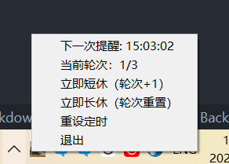
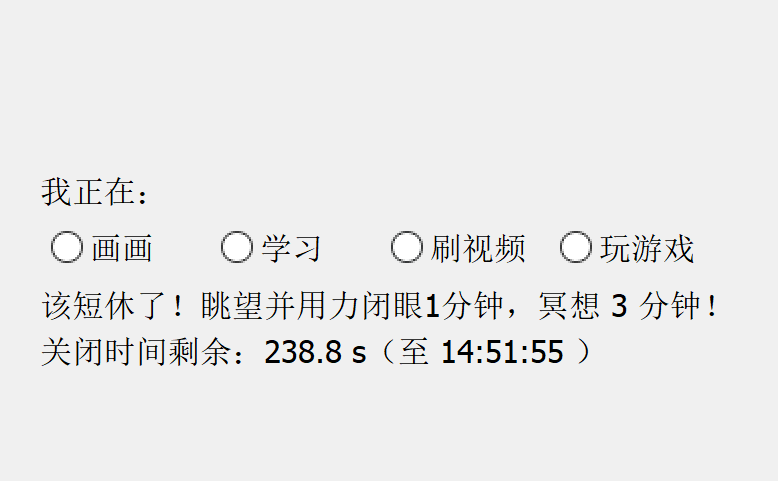
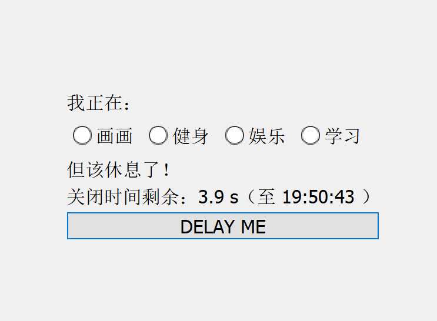

写一个 20-20-20 应用
https://github.com/V-YOP/mgd-helper


我现在是用之前写的定时器应用去让我坚持 20-20-20 原则的，每 20 分钟弹一个框，要求我看外面 1 分钟，然后闭眼冥想 3 分钟，但它有几个问题：
- 我用的 CRON 表达式，这里本应当是 24 分钟弹一次框，CRON 表达式无法实现这一点，而每 20 分钟弹框，就是说我回到工作状态后 16 分钟后马上又来一次了，这个间隔有点太短了，影响我的工作
- 我有时候在需要休息的时候正好有不想马上割舍的事情，比如研究一个觉得对自己特别重要的东西，停不下来……这时候我希望有一个推迟几分钟再重新显示的功能，显然推迟后不能再推迟
- 我有时候在这个间隔中途就会跑去休息，我希望能够有一个重新开始计时的功能
- 我需要支持长休——在 3 次或 4 次 20 分钟后，来一次 15 分钟的长休之类的，多看外面几分钟，冥想 10 分钟……
- 在摸鱼的时候，我总是倾向直接把那个弹窗关掉（实际上，我也发现，每到晚上，我就更容易直接关掉，但偏偏晚上是眼睛的炎症最严重的时候，最需要坚持 20-20-20 原则的时候，我希望这里：
- 这个窗口要占满大部分屏幕，且不能关闭，四分钟自动关闭
- 我希望在弹窗显示时要求我明确我现在正在做什么，这个可以后面留做记录做统计，同时也提醒我让我意识到我正在摸鱼
- 倘若我没做操作，证明我可能不在电脑前，这时候也要去做记录
我其实期待的是一个番茄钟一样的东西，但市面上所有番茄钟都是需要用户手动触发的，而我需要软件触发我。
所以，我打算重新去写一个专门的应用去做这点。关于技术栈，想了想，我还是……用 PyQt5 吧，这个我相对来说还是熟悉的。
但这里有趣的地方是，我可以拿这个项目来做第一次 PBL——定实践性的项目，遇到啥问题解决啥问题，但浅尝辄止，以扩展广度为优先，虽然我不会做复盘机制啦。
我以前实际上不是这么做项目的，我在以前做项目的时候，喜欢在实际开始项目之前，先去把项目中所用到的技术栈给它系统地学一次，做笔记。这导致我编程这么多年，只做了三四个项目，笔记记了上百篇。这种思路，实际上也反映到了我对画画的学习中。
在编程上，因为我对系统学习还是比较习惯和热衷的，总是能看到一些新花样新东西，或者是旧东西的新形态，这种趣味就促进我去学习；但目前在画画的基础学习上，我还没达到能找到趣味的阶段。
具体的说，在编程上，我从建立 pattern，重构 pattern 中得到趣味，而在画画上……我还在学基础语法呢，一切的一切都让我痛苦，头皮发麻，怀疑意义。当然，这两个领域的反馈快慢也是决定性因素。
这实际上也暗示我，我刚开始学编程的时候可能也有过类似的像现在学画画的阶段，只不过太久远，我给忘掉了，而且当时学编程，有外部的压力——学业的，公司的，所以我终究是达到了那种阶段；而现在学画画，没有外部的压力，全靠自驱，所以我就入门更加困难了。而现在的 PBL，就是我的回应。
但这里也有一个题外话——如果我忘记了我最开始学编程的痛苦，那那些做教程的大师们，是否也忘记了自己作为初学者时的痛点，因此他们的言论、建议也需要辩证地看待？
总之，直接开始！这次有一些我需要掌握的新东西——如 Qt 的托盘，然后 Qt 的界面布局要在使用中复习一下。明显，如果我对 Qt 根本不熟悉的话，我确实仍旧要先对 Qt 有个整体印象才行（这还是在我对 GUI 编程有经验的情况下），但我不能说完全不熟悉，所以这里就该 PBL 上场！
明显，这逻辑主要分为三个部分：
- 托盘
- 定时器
- 弹窗
我希望能配置，但考虑到只是我自己用，我没必要去写一个配置页面，我直接把配置保存为 JSON，保存到可执行文件（py 或 exe，后者来自于打包）的当前目录下即可。
实际非常简单（我之前用 pystray+tkinker+asyncio 把问题弄复杂了一整个档次，本来 Qt 一个线程就能解决的事情，用这套技术栈我需要三个线程，把线程交互问题也弄进来了）。
从最明显的东西开始——提示弹窗，它实际上也是完全可以独立出来，松耦合的。
弹窗
弹窗要：
- 不能手动关闭，全屏遮罩，始终置顶
- 四分钟（可配置）自动关闭，显示关闭前的时间
- 提供一系列选项，要求选择当前在做的事情（如果没选择，说明人不在电脑前）
- 弹窗要通过一个阻塞的函数暴露给调用者，定时时间，所有选项，显示文字内容作为参数，然后把用户的选择作为返回值
根据我之前的经验，弹窗要用 QDialog，用它的 exec 方法去弹出、阻塞，等待用户的操作。
第一个问题要提出来了——exec 方法我知道它会阻塞整个应用程序的其它窗口，那它会阻塞 QTimer 吗？这个问题对后面的实践会有一些影响，同时我也有一些兴趣。
按我之前的理解，exec 方法，无论是 QDialog 还是 QEventLoop，它都是自旋，建立一个嵌套的事件循环去替代原本的，因此，它不会阻塞除了这次调用以外的其他的事件。但，为何 QDialog 的 exec 会阻塞整个应用程序的其它窗口？
根据和 AI 的交互，得到答案——exec 阻塞其它窗口，并非副作用，而是有意为之。这是出于 QDialog 的模态性（setWindowModality 方法，这个方法其实是 QWidget 里的，但它并非始终起作用，实际上你调用 QDialog 的 show 方法，它也不会进行阻塞），模态性即一个窗口如何影响对其他窗口的操作，一个窗口可以配置为阻塞父窗口，或者阻塞整个应用程序。
这个问题，到此为止，因为实践中我只需要这些。
我注意到，对这种偏向理论性的问题，有明确的答案的问题，我可以预先给它一个假设，然后求证，看是去补充，还是去驳倒，或者是证实这个假设。这显然是一种更好的学习策略。
OK，然后，写弹窗。我以前倾向于……算了，我不吐槽了，专注代码。
我直接继承QDialog，提供一个自定义的exec方法可以返回东西的。很好实现啦都。
然而，这玩意儿我写了一天，我佛了。
后面还遇到其他问题——关于选项，接触到了QButtonGroup（晓得了它持有一系列Button，以Id标识，允许获得当前Checked的Button和它的Id）；以及单选框QRatioButton；QTimer也是第一次不用singleShot去操作（在krita里singleShot以外的功能好像都没生效…………就TM离谱，但现在看来是我没get到点？）；以及用styleSheet调了字体大小。
艾玛，这小小一个弹窗我写了一天？

第一天就这样吧……晚上八点了，洗个澡看一集番剧就该关闭电脑了。
下一步是关于托盘，托盘这个就很麻烦，我还想不好这架构该怎么设计。
托盘
先把东西弄出来。托盘我以前没用过，这就只能先找AI找示例去开始了。
托盘为了实现简单，让它自己不包含定时器逻辑，它显示的内容由外界设定，它的按钮的功能也由外界去绑定，即，让它作为一个受管组件……虽然说是受管组件，但因为QT不是MVVM，这里实际上就是说：
- 暴露setXXX方法，设置显示内容
- 暴露每个按钮的signal
这对DEBUG很方便，但这其实什么也没抽象出来不是？
托盘一个多小时就写出来了，这还包含设计呢，没有明显技术难关，因为它的实现没有包含任何业务逻辑，一个仅供显示的组件而已。
Worker
业务逻辑……相对复杂，但也不是很复杂，不至于上状态机。总之它持有一个定时器，然后在循环中进行：
- 更新tray
- 检查和显示dialog
- ……
这一部分其实最复杂，但下午两三点就给它全写完了，剩下的就差bug了。
这也证明我当前实践经验的欠缺……我连要做的玩意儿的工时都定不出来，虽然脑子里理论一大堆，但落到工程上，像个初学者。
DONE！该回到画画了。
本博客所有文章除特别声明外，均采用 CC BY-NC-SA 4.0 协议 ，转载请注明出处！